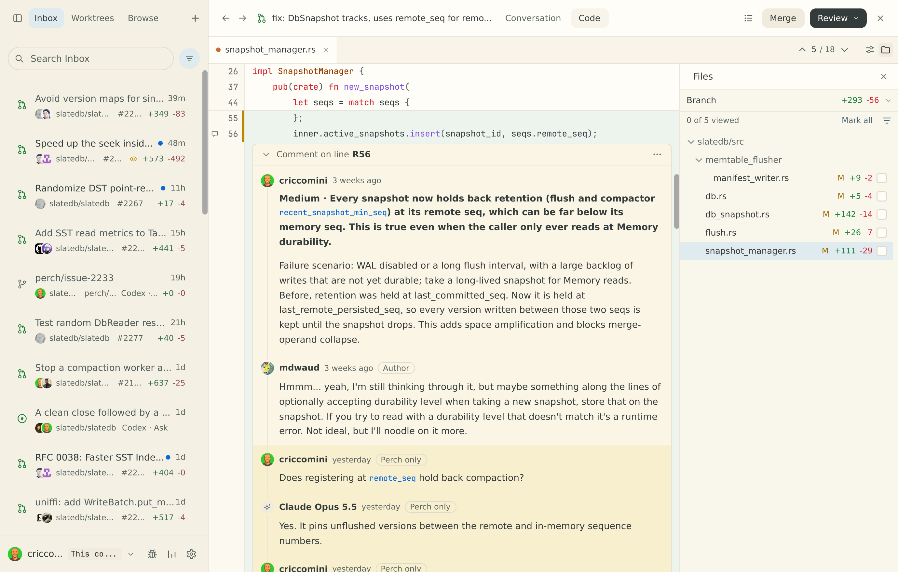
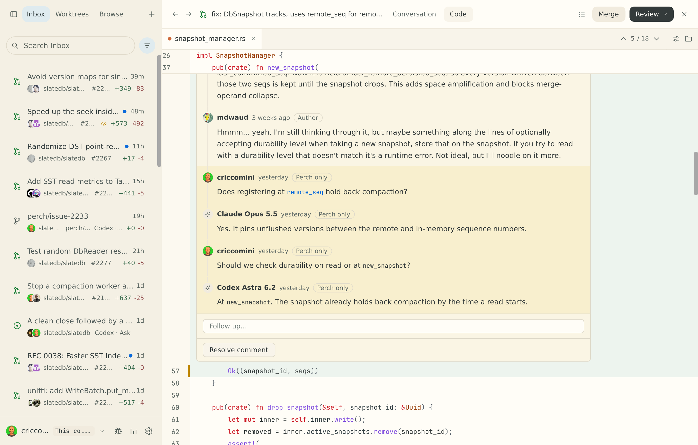
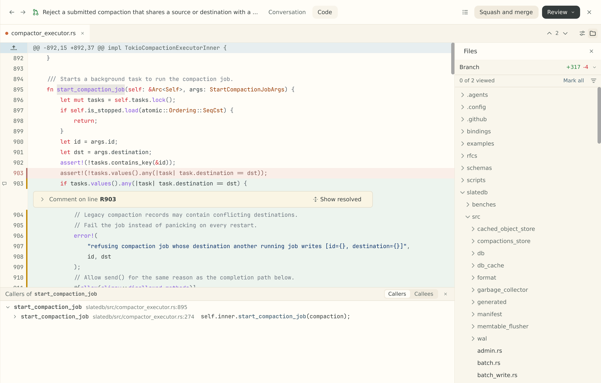
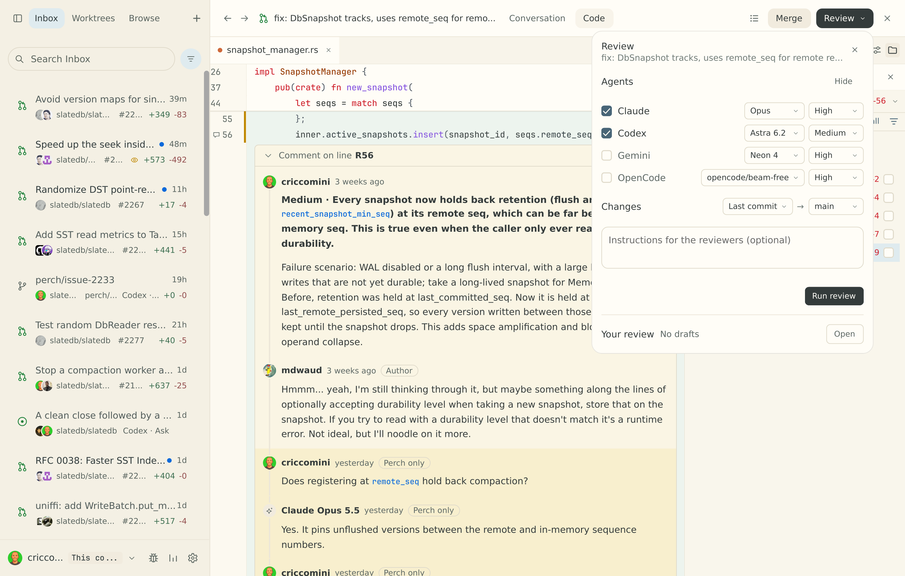
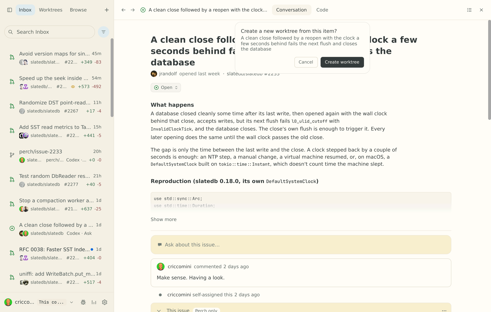
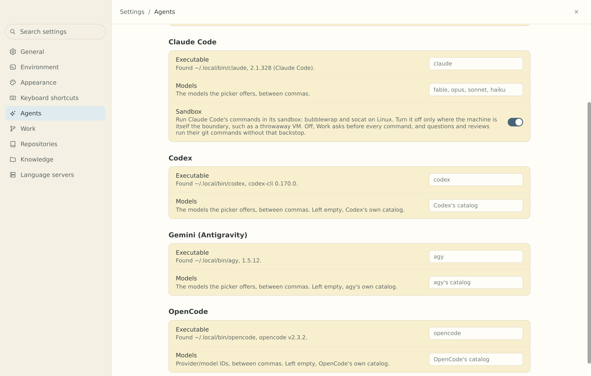
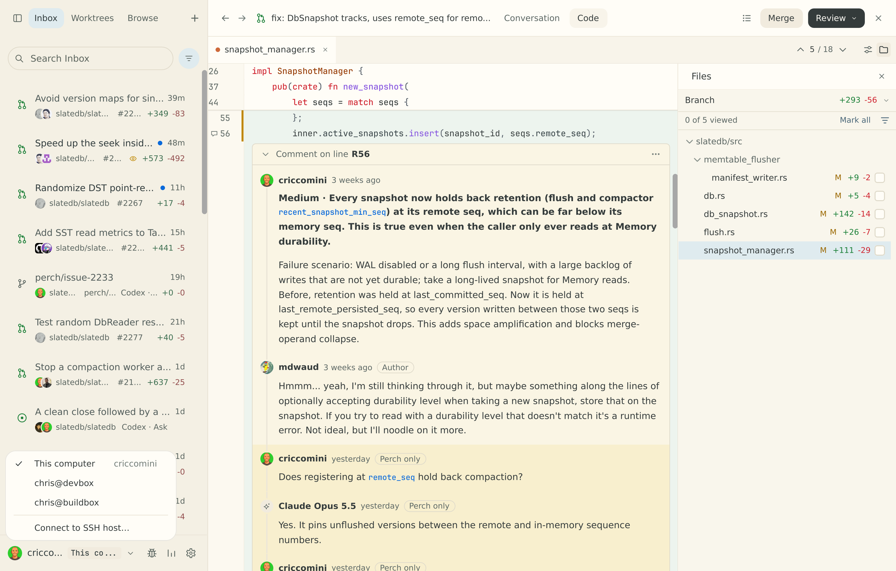

Perch
PerchAgents PRs suck. Perch helps you review them.
The best of GitHub, Visual Studio Code, and Claude Desktop in one native app. Human reviews with agentic assistance.
Install Perch

The best of GitHub, Visual Studio Code, and Claude Desktop in one native app. Human reviews with agentic assistance.
Install Perch
Ask Claude about a line of code, then bring Codex, Gemini, or OpenCode into the same conversation.

Follow a symbol beyond the diff. Open the file tree and use call hierarchy to see who calls a function.

Choose the agents you want on a review. Their findings land as draft comments for you to check before posting.

Give an agent its own Git worktree and keep the work linked to the GitHub issue.

Use Claude Code, Codex, Gemini through Antigravity, or OpenCode. Pick your default in Settings.

Switch environments from your profile. Git, language servers, and agents run where your code lives.
